Build this as we go. Every stop on the tube, then the organs that pour into it.
1. Mouth (oral cavity)
2. Pharynx
3. Esophagus
4. Stomach
5. Small intestine
6. Large intestine
7. Rectum and anal canal
+. Salivary glands, into the mouth
+. Teeth and tongue
+. Liver, into the duodenum by bile
+. Gallbladder
+. Pancreas, into the duodenum
Click or press the right arrow to move forward. Press ? for all the keys.
BIO 004 · Digestive System: the GI map
1. Mouth (oral cavity) fill in
Competency 109 to 125
1. Mouth (oral cavity)
Epithelium:
Happens here:
Boundaries:
1. Mouth (oral cavity) · click to write it on the note sheet· students write the answer on the note sheet
BIO 004 · Digestive System: the GI map
2. Pharynx fill in
Competency 109 to 125
2. Pharynx
Food uses:
Sealed off:
Gate out:
2. Pharynx · click to write it on the note sheet· students write the answer on the note sheet
BIO 004 · Digestive System: the GI map
3. Esophagus fill in
Competency 109 to 125
3. Esophagus
Epithelium:
Outer layer:
Through the diaphragm at:
Gate out:
3. Esophagus · click to write it on the note sheet· students write the answer on the note sheet
BIO 004 · Digestive System: the GI map
4. Stomach fill in
Competency 109 to 125
4. Stomach
Regions in order:
Epithelium:
Extra muscle layer:
Folds:
Gate out:
4. Stomach · click to write it on the note sheet· students write the answer on the note sheet
BIO 004 · Digestive System: the GI map
5. Small intestine fill in
Competency 109 to 125
5. Small intestine
Duodenum, 25 cm:
Jejunum, 1 m:
Ileum, 2 m:
Surface:
Gate out:
5. Small intestine · click to write it on the note sheet· students write the answer on the note sheet
BIO 004 · Digestive System: the GI map
6. Large intestine fill in
Competency 109 to 125
6. Large intestine
In order:
Only here:
Epithelium:
Job:
6. Large intestine · click to write it on the note sheet· students write the answer on the note sheet
BIO 004 · Digestive System: the GI map
7. Rectum and anal canal fill in
Competency 109 to 125
7. Rectum and anal canal
Rectum:
Anal canal lining near the anus:
Two gates:
7. Rectum and anal canal · click to write it on the note sheet· students write the answer on the note sheet
BIO 004 · Digestive System: the GI map
+. Salivary glands, into the mouth fill in
Competency 109 to 125
Salivary glands, into the mouth
Parotid duct opens:
Submandibular duct opens:
Sublingual ducts open:
Salivary glands, into the mouth · click to write it on the note sheet· students write the answer on the note sheet
BIO 004 · Digestive System: the GI map
+. Teeth and tongue fill in
Competency 109 to 125
Teeth and tongue
Tongue muscles:
Papillae without taste buds:
Adult teeth:
Teeth and tongue · click to write it on the note sheet· students write the answer on the note sheet
BIO 004 · Digestive System: the GI map
+. Liver, into the duodenum by bile fill in
Competency 109 to 125
Liver, into the duodenum by bile
Lobes:
Lobule:
Bile path:
Liver, into the duodenum by bile · click to write it on the note sheet· students write the answer on the note sheet
BIO 004 · Digestive System: the GI map
+. Gallbladder fill in
Competency 109 to 125
Gallbladder
Regions:
Its duct:
Job:
Gallbladder · click to write it on the note sheet· students write the answer on the note sheet
BIO 004 · Digestive System: the GI map
+. Pancreas, into the duodenum fill in
Competency 109 to 125
Pancreas, into the duodenum
Regions:
Main duct joins the
Accessory duct opens at the
Acini (exocrine) and
Pancreas, into the duodenum · click to write it on the note sheet· students write the answer on the note sheet
BIO 004 Human Anatomy · Module 4 · Lecture
Digestive System, Part I
Competencies 109 to 114, 120, 121: peritoneum and folds, retroperitoneal organs, the gut wall and its sphincters, mouth, salivary glands, tongue, esophagus.
A. Peritoneum and the omenta (cadaver)
B. Mesentery, and what sits behind the peritoneum (cadaver)
C. The wall of the tube, and its gates (draw it)
D. Mouth, salivary glands, tongue, esophagus
Click or press the right arrow to move forward. Press ? for all the keys.
BIO 004 · Digestive System, Part I
A. Peritoneum and the omenta (cadaver) photo 1 of 3
Competency 111
1Parietal peritoneum
2Visceral peritoneum
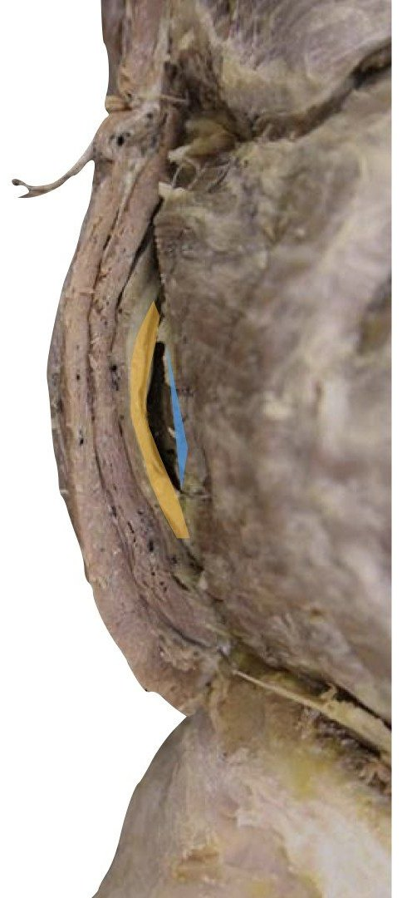
12
Cadaver, peritoneum: parietal and visceral layers · 2 structures · click to write it on the note sheet
BIO 004 · Digestive System, Part I
A. Peritoneum and the omenta (cadaver) photo 2 of 3
Competency 111
1Greater omentum
1
Cadaver, greater omentum · 1 structures · click to write it on the note sheet
BIO 004 · Digestive System, Part I
A. Peritoneum and the omenta (cadaver) photo 3 of 3
Competency 111
1Lesser omentum
1
Cadaver, lesser omentum · 1 structures · click to write it on the note sheet
BIO 004 · Digestive System, Part I
A. Peritoneum and the omenta (cadaver) fill in
Competency 111
Five folds: what each one connects
Greater omentum:
Lesser omentum:
Falciform ligament:
Mesentery:
Mesocolon:
Five folds: what each one connects · click to write it on the note sheet· students write the answer on the note sheet
BIO 004 · Digestive System, Part I
B. Mesentery, and what sits behind the peritoneum (cadaver) photo 1 of 2
Competency 111, 112
1Ileum
3Mesentery
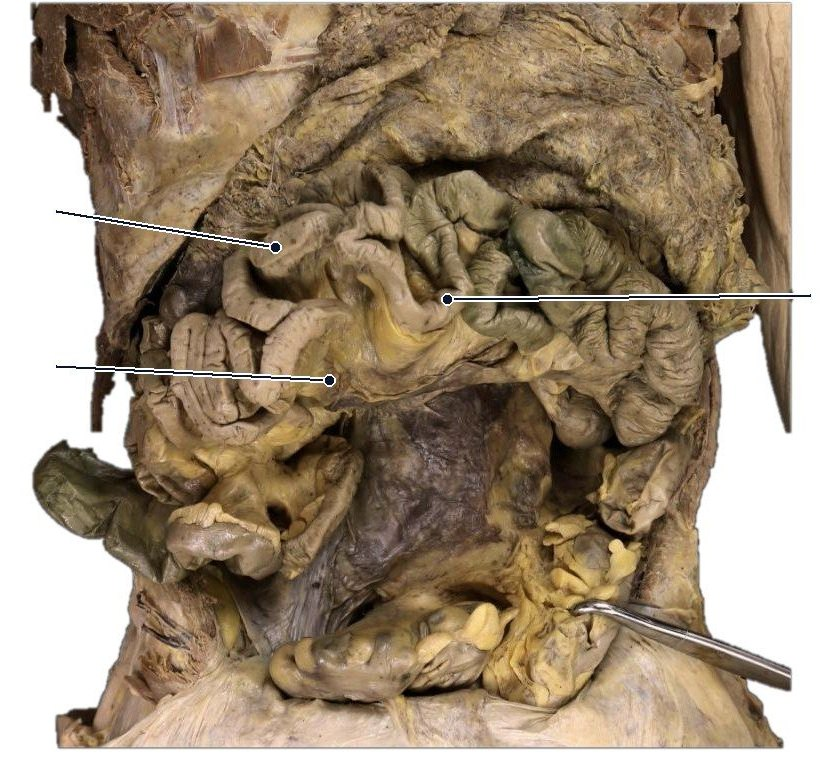
123
2Jejunum
Cadaver, mesentery of the small intestine · 3 structures · click to write it on the note sheet
BIO 004 · Digestive System, Part I
B. Mesentery, and what sits behind the peritoneum (cadaver) photo 2 of 2
Competency 111, 112
2Mesentery
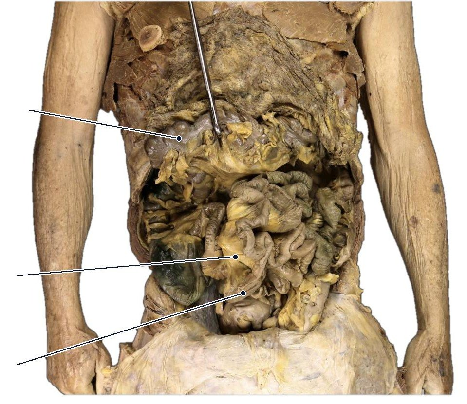
123
1Transverse colon
3Small intestine
Cadaver, transverse colon lifted · 3 structures · click to write it on the note sheet
BIO 004 · Digestive System, Part I
B. Mesentery, and what sits behind the peritoneum (cadaver) fill in
Competency 111, 112
Intraperitoneal:
Retroperitoneal:
Retroperitoneal organs:
On a mesocolon:
Fill in · click to write it on the note sheet· students write the answer on the note sheet
BIO 004 · Digestive System, Part I
C. The wall of the tube, and its gates (draw it) fill in
Competency 109, 110, 114
Four layers, lumen outward
1.
2.
3.
4.
Fill in
Submucosal plexus controls
Myenteric plexus controls
Stratified squamous lines the
Simple columnar lines the
Six sphincters, in the order food meets them
1.
2.
3.
4.
5.
6.
Four layers, lumen outward · Fill in · Six sphincters, in the order food meets them · click to write it on the note sheet· students write the answer on the note sheet
BIO 004 · Digestive System, Part I
D. Mouth, salivary glands, tongue, esophagus photo 1 of 2
Competency 113, 120, 121
1Parotid duct
2Parotid gland
123
3Submandibular gland
Model, salivary glands · 3 structures · click to write it on the note sheet
BIO 004 · Digestive System, Part I
D. Mouth, salivary glands, tongue, esophagus photo 2 of 2
Competency 113, 120, 121
3Tongue
5Epiglottis
7Vocal folds (true vocal cords)
1234567
1Hard palate
2Soft palate
4Esophagus
6Vestibular folds (false vocal folds)
Cadaver, midsagittal: palate, tongue, esophagus · 7 structures · click to write it on the note sheet
BIO 004 · Digestive System, Part I
D. Mouth, salivary glands, tongue, esophagus fill in
Competency 113, 120, 121
Parotid duct:
Submandibular duct:
Sublingual ducts:
No taste buds:
Extrinsic muscles:
Intrinsic muscles:
Esophageal hiatus:
Fill in · click to write it on the note sheet· students write the answer on the note sheet
BIO 004 Human Anatomy · Module 4 · Lecture
Digestive System, Part II
Competencies 115 and 122 to 125: stomach, liver, gallbladder and bile path, pancreas, and the accessory organ disorders.
A. Stomach regions and features (model)
B. Liver lobes and ligaments (model)
C. Bile path and the pancreas (model and cadaver)
D. Liver lobule, and the organs in place (model and cadaver)
Click or press the right arrow to move forward. Press ? for all the keys.
BIO 004 · Digestive System, Part II
A. Stomach regions and features (model)
Competency 115
1Esophagus
4Cardiac sphincter
5Lesser curvature
7Pyloric region
8Pyloric sphincter (pylorus)
9Gastric rugae
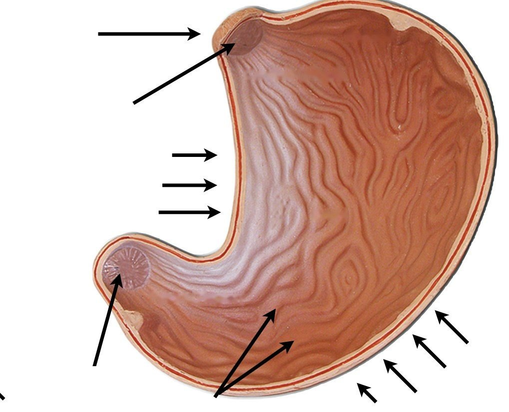
12345678910
2Fundus
3Cardiac region
6Body of stomach
10Greater curvature
Model, stomach, interior · 10 structures · click to write it on the note sheet
BIO 004 · Digestive System, Part II
A. Stomach regions and features (model) fill in
Competency 115
Muscle layers, inside out:
Extra layer:
Lesser curvature faces
Greater curvature holds the
Rugae are folds of
Fill in · click to write it on the note sheet· students write the answer on the note sheet
BIO 004 · Digestive System, Part II
B. Liver lobes and ligaments (model) photo 1 of 2
Competency 122
3Right lobe of liver
4Ligamentum teres (round ligament)
1234
1Falciform ligament
2Left lobe of liver
Model, liver, anterior · 4 structures · click to write it on the note sheet
BIO 004 · Digestive System, Part II
B. Liver lobes and ligaments (model) photo 2 of 2
Competency 122
1Caudate lobe
3Left lobe of liver
12345
2Right lobe of liver
4Quadrate lobe
5Gallbladder
Model, liver, inferior · 5 structures · click to write it on the note sheet
BIO 004 · Digestive System, Part II
B. Liver lobes and ligaments (model) fill in
Competency 122
From the front:
From below:
Falciform ligament reaches the
Ligamentum teres was the
Porta hepatis, in:
Porta hepatis, out:
Fill in · click to write it on the note sheet· students write the answer on the note sheet
BIO 004 · Digestive System, Part II
C. Bile path and the pancreas (model and cadaver) photo 1 of 2
Competency 123, 124
1Right hepatic duct
6Gallbladder
123456
2Left hepatic duct
3Common hepatic duct
4Cystic duct
5Common bile duct
Model, gallbladder and the biliary tree · 6 structures · click to write it on the note sheet
BIO 004 · Digestive System, Part II
C. Bile path and the pancreas (model and cadaver) photo 2 of 2
Competency 123, 124
1Accessory pancreatic duct
2Main pancreatic duct
3Plicae circulares
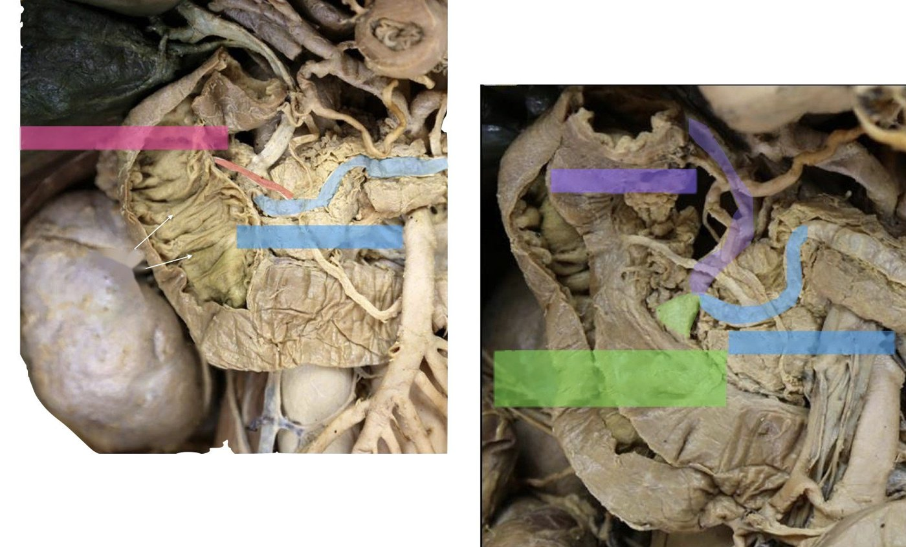
123456
4Common bile duct
5Main pancreatic duct
6Hepatopancreatic ampulla
Cadaver, pancreatic and bile ducts entering the duodenum · 6 structures · click to write it on the note sheet
BIO 004 · Digestive System, Part II
C. Bile path and the pancreas (model and cadaver) fill in
Competency 123, 124
A drop of bile, in order
1.
2.
3.
4.
5.
6.
7.
Fill in
Joins the common bile duct:
Exocrine:
Endocrine:
A drop of bile, in order · Fill in · click to write it on the note sheet· students write the answer on the note sheet
BIO 004 · Digestive System, Part II
D. Liver lobule, and the organs in place (model and cadaver) photo 1 of 2
Competency 122, 125
2Bile duct
3Branch of hepatic portal vein
6Branch of hepatic artery proper
9Portal triad
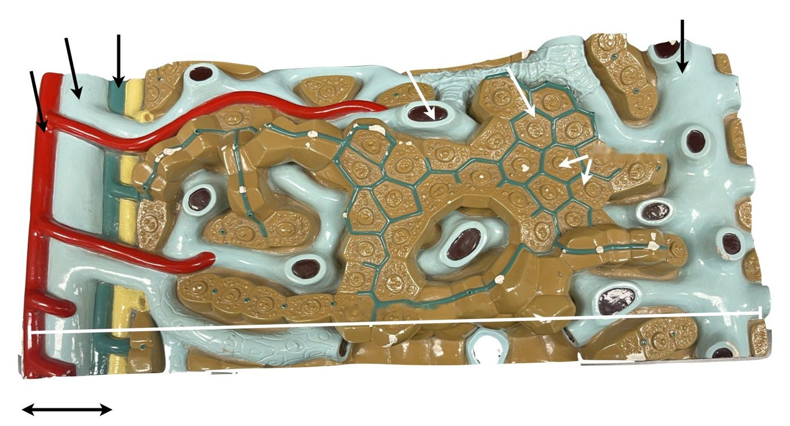
123456789
1Central vein
4Bile canaliculi
5Liver sinusoids
7Hepatocytes
8Liver lobule
Model, liver lobule · 9 structures · click to write it on the note sheet
BIO 004 · Digestive System, Part II
D. Liver lobule, and the organs in place (model and cadaver) photo 2 of 2
Competency 122, 125
1Right lobe of liver
3Gallbladder
4Pancreas
6Right kidney
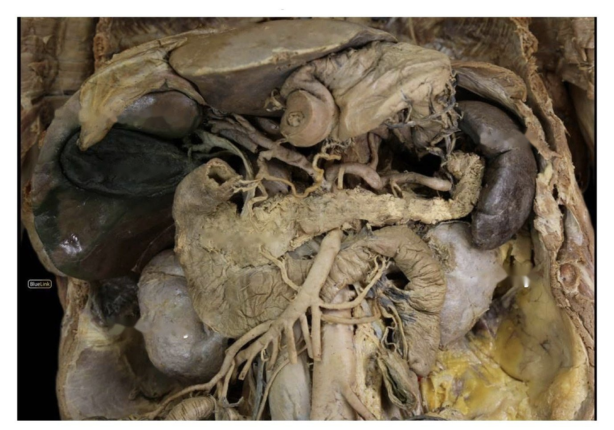
123456
2Spleen
5Left kidney
Cadaver, major organs of the abdomen · 6 structures · click to write it on the note sheet
BIO 004 · Digestive System, Part II
D. Liver lobule, and the organs in place (model and cadaver) fill in
Competency 122, 125
Fill in
Blood flows toward the
Bile flows toward the
Portal triad:
Disorders: name the organ
Gallstones, cholecystitis:
Hepatitis, cirrhosis:
Pancreatitis:
Mumps:
Stone at the ampulla blocks
Fill in · Disorders: name the organ · click to write it on the note sheet· students write the answer on the note sheet
BIO 004 Human Anatomy · Module 4 · Lecture
Digestive System, Part III
Competencies 116 to 119: small intestine, large intestine and rectum, the path of food, and the canal disorders.
A. Small and large intestine in place (model)
B. Duodenum (cadaver) and the colon surface (model)
C. Trace a bite of food, mouth to anus
D. Disorders: which structure does each one affect?
Click or press the right arrow to move forward. Press ? for all the keys.
BIO 004 · Digestive System, Part III
A. Small and large intestine in place (model)
Competency 116, 117
1Hepatic flexure (right colic flexure)
3Transverse colon
4Ascending colon
8Ileum
7Ileocecal valve
10Cecum
11Vermiform appendix
123456789101112
2Splenic flexure (left colic flexure)
5Jejunum
6Descending colon
9Sigmoid colon
12Rectum
Model, small and large intestine · 12 structures · click to write it on the note sheet
BIO 004 · Digestive System, Part III
A. Small and large intestine in place (model) fill in
Competency 116, 117
Duodenum:
Jejunum:
Ileum, the longest:
Food leaves the ileum into the
Four parts of the colon:
Fill in · click to write it on the note sheet· students write the answer on the note sheet
BIO 004 · Digestive System, Part III
B. Duodenum (cadaver) and the colon surface (model) photo 1 of 2
Competency 116, 117
2Superior part of the duodenum
3Descending part of the duodenum
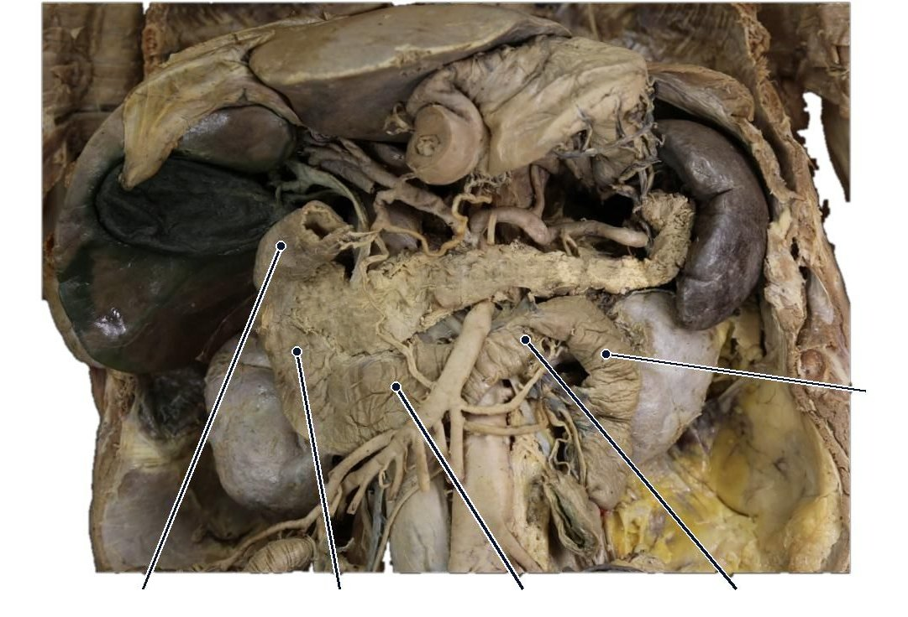
12345
1Jejunum
4Inferior (horizontal) part of the duodenum
5Ascending part of the duodenum
Cadaver, the four parts of the duodenum · 5 structures · click to write it on the note sheet
BIO 004 · Digestive System, Part III
B. Duodenum (cadaver) and the colon surface (model) photo 2 of 2
Competency 116, 117
1Haustra
2Teniae coli
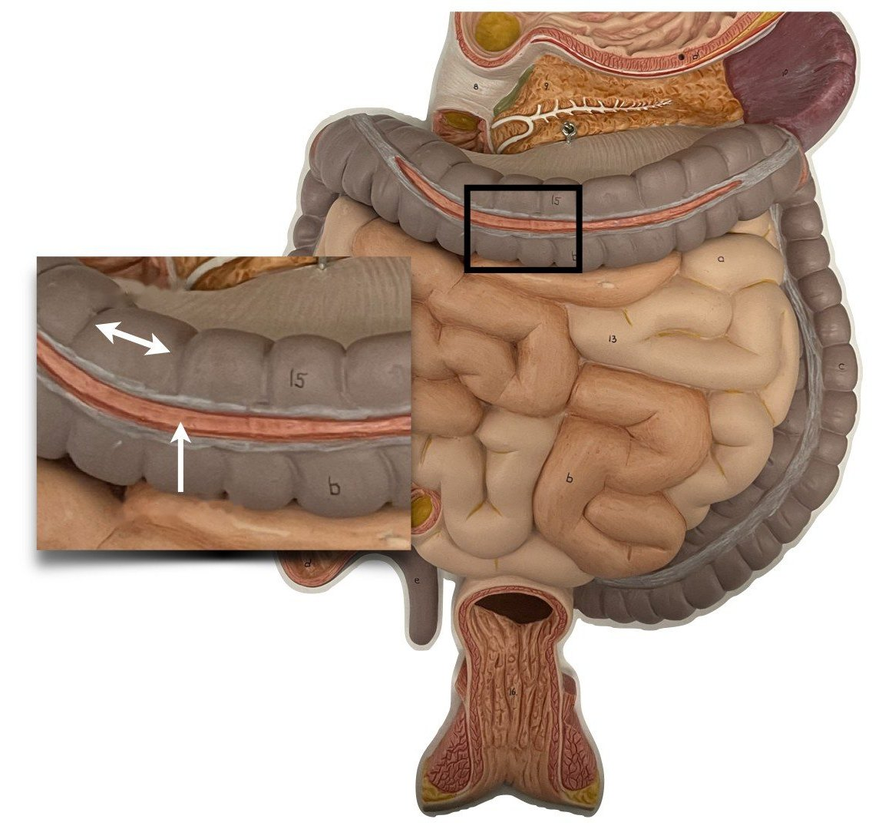
12
Model, large intestine surface · 2 structures · click to write it on the note sheet
BIO 004 · Digestive System, Part III
B. Duodenum (cadaver) and the colon surface (model) fill in
Competency 116, 117
Folding, big to small:
Lacteal absorbs
Large intestine only:
Teniae coli are the
No haustra on the
Fill in · click to write it on the note sheet· students write the answer on the note sheet
BIO 004 · Digestive System, Part III
C. Trace a bite of food, mouth to anus fill in
Competency 118
In order, with a ring at each sphincter
1.
2.
3.
4.
5.
6.
7.
8.
Fill in
Not on the path:
Most absorption happens in the
Water is absorbed and feces form in the
In order, with a ring at each sphincter · Fill in · click to write it on the note sheet· students write the answer on the note sheet
BIO 004 · Digestive System, Part III
D. Disorders: which structure does each one affect? fill in
Competency 119
Disorder: structure, what changes
GERD:
Hiatal hernia:
Peptic ulcer:
Appendicitis:
Diverticulosis:
IBD:
Hemorrhoids:
Colorectal cancer:
Disorder: structure, what changes · click to write it on the note sheet· students write the answer on the note sheet
BIO 004 Human Anatomy · Module 4 · Lecture
Digestive System: Histology
The tube and the accessory organs under the microscope. Competencies 109, 113, 115 to 117, 121, 122, 124.
A. Esophagus and stomach on the slide
B. Small intestine and large intestine on the slide
C. Liver and pancreas on the slide
D. Salivary gland on the slide, and the four-layer rule
Click or press the right arrow to move forward. Press ? for all the keys.
BIO 004 · Digestive System: Histology
A. Esophagus and stomach on the slide
Competency 109, 113, 115
2
2Esophagus
Slide, esophagus (right) beside the trachea · 1 structures · click to write it on the note sheet
BIO 004 · Digestive System: Histology
A. Esophagus and stomach on the slide fill in
Competency 109, 113, 115
Esophagus epithelium:
Esophagus outer layer:
Stomach surface epithelium:
Gastric pits lead to
Chief cells make
Parietal cells make
Stomach muscularis:
Fill in · click to write it on the note sheet· students write the answer on the note sheet
BIO 004 · Digestive System: Histology
B. Small intestine and large intestine on the slide fill in
Competency 116, 117
Villi are
Microvilli form the
Crypts (intestinal glands) hold
Duodenum only, in the submucosa:
Ileum only:
Colon mucosa:
Colon outer muscle:
Fill in · click to write it on the note sheet· students write the answer on the note sheet
BIO 004 · Digestive System: Histology
C. Liver and pancreas on the slide fill in
Competency 122, 124
Six-sided unit:
In the center:
At the corners:
Between the plates:
Blood flows
Bile flows
Pancreas: dark clusters are
Pale round patches are
Fill in · click to write it on the note sheet· students write the answer on the note sheet
BIO 004 · Digestive System: Histology
D. Salivary gland on the slide, and the four-layer rule fill in
Competency 109, 121
Fill in
Serous cells make
Mucous cells make
Parotid is
Sublingual is
Four layers, any slide of the tube
1.
2.
3.
4.
Fill in · Four layers, any slide of the tube · click to write it on the note sheet· students write the answer on the note sheet
BIO 004 Human Anatomy · Module 4 · Lecture
Blood Flow of the Abdomen and Lower Limb
Competencies 126 and 127: abdominal aorta and branches, the inferior vena cava, the hepatic portal system, pelvic and lower limb vessels.
A. Abdominal aorta and its branches (cadaver and model)
B. Inferior vena cava and its tributaries (cadaver)
C. The hepatic portal system: the detour through the liver (model)
D. Pelvis and lower limb: one artery, renamed at each landmark
Click or press the right arrow to move forward. Press ? for all the keys.
BIO 004 · Blood Flow of the Abdomen and Lower Limb
A. Abdominal aorta and its branches (cadaver and model) photo 1 of 2
Competency 126
2Superior mesenteric artery
4Abdominal aorta
6Right common iliac artery
7Left common iliac artery
1234567
1Celiac trunk
3Left renal artery
5Inferior mesenteric artery
Cadaver, abdominal aorta and branches · 7 structures · click to write it on the note sheet
BIO 004 · Blood Flow of the Abdomen and Lower Limb
A. Abdominal aorta and its branches (cadaver and model) photo 2 of 2
Competency 126
2Left branch of hepatic artery proper
1Right branch of hepatic artery proper
5Common hepatic artery
6Gastroduodenal artery
1234567
3Celiac trunk
4Left gastric artery
7Splenic artery
Model, celiac trunk and its branches · 7 structures · click to write it on the note sheet
BIO 004 · Blood Flow of the Abdomen and Lower Limb
A. Abdominal aorta and its branches (cadaver and model) fill in
Competency 126
Unpaired, top to bottom:
Celiac trunk splits into
Paired branches:
Ends at L4 as the
Fill in · click to write it on the note sheet· students write the answer on the note sheet
BIO 004 · Blood Flow of the Abdomen and Lower Limb
B. Inferior vena cava and its tributaries (cadaver) photo 1 of 2
Competency 126
2Right renal vein
5Right gonadal vein
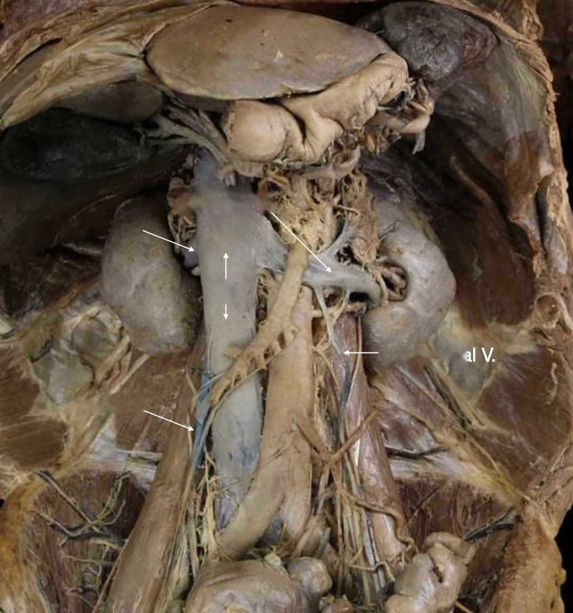
12345
1Left renal vein
3Inferior vena cava
4Left gonadal vein
Cadaver, abdominal veins · 5 structures · click to write it on the note sheet
BIO 004 · Blood Flow of the Abdomen and Lower Limb
B. Inferior vena cava and its tributaries (cadaver) photo 2 of 2
Competency 126
2Right renal vein
5Right gonadal vein
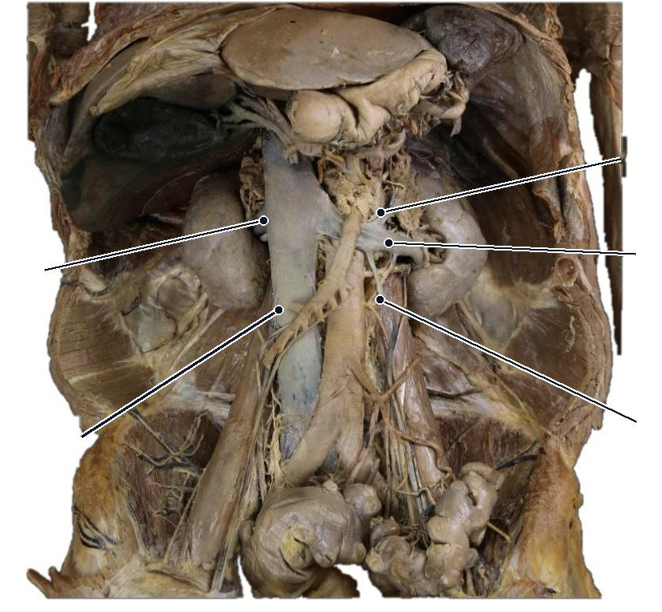
12345
1Left suprarenal vein
3Left renal vein
4Left gonadal vein
Cadaver, inferior vena cava and tributaries · 5 structures · click to write it on the note sheet
BIO 004 · Blood Flow of the Abdomen and Lower Limb
B. Inferior vena cava and its tributaries (cadaver) fill in
Competency 126
IVC forms at L5 from the
Through the diaphragm at
Right gonadal vein drains to
Left gonadal vein drains to
Hepatic veins enter
Fill in · click to write it on the note sheet· students write the answer on the note sheet
BIO 004 · Blood Flow of the Abdomen and Lower Limb
C. The hepatic portal system: the detour through the liver (model)
Competency 126
1Hepatic portal vein
3Superior mesenteric vein
123
2Splenic vein
Model, hepatic portal system · 3 structures · click to write it on the note sheet
BIO 004 · Blood Flow of the Abdomen and Lower Limb
C. The hepatic portal system: the detour through the liver (model) fill in
Competency 126
Glucose, villus to right atrium
1.
2.
3.
4.
5.
6.
Fill in
Portal vein forms from
A portal system has
Portal vein carries blood
Glucose, villus to right atrium · Fill in · click to write it on the note sheet· students write the answer on the note sheet
BIO 004 · Blood Flow of the Abdomen and Lower Limb
D. Pelvis and lower limb: one artery, renamed at each landmark photo 1 of 2
Competency 127
2Common iliac vein
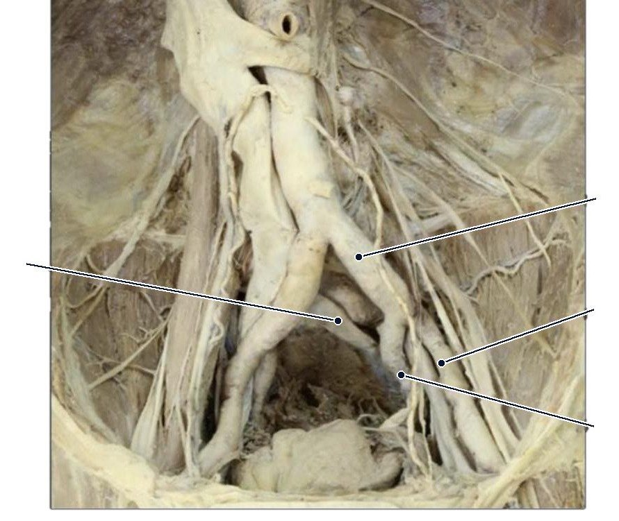
1234
1Common iliac artery
3External iliac artery
4Internal iliac artery
Cadaver, iliac arteries · 4 structures · click to write it on the note sheet
BIO 004 · Blood Flow of the Abdomen and Lower Limb
D. Pelvis and lower limb: one artery, renamed at each landmark photo 2 of 2
Competency 127
1Inferior vena cava
2Common iliac vein
4Internal iliac vein
1234
3External iliac vein
Cadaver, iliac veins · 4 structures · click to write it on the note sheet
BIO 004 · Blood Flow of the Abdomen and Lower Limb
D. Pelvis and lower limb: one artery, renamed at each landmark fill in
Competency 127
Artery to the foot, in order
1.
2.
3.
4.
5.
Fill in
Femoral triangle, lateral to medial:
Superficial vein up the medial leg:
Sciatic nerve splits into
Artery to the foot, in order · Fill in · click to write it on the note sheet· students write the answer on the note sheet
Dr. Sharilyn Rennie · BIO 004 Human Anatomy · Solano Community College · Photos: BIO 004 Digital Atlas
Keys → space Enter: next reveal or slide ← Backspace: undo last reveal, or back a slide N: skip to next slide A: reveal everything on this slide R: reset this slide Home / End: first / last slide ?: this help
Click any box or card to write it on the note sheet
 1
1 1
1 123
123 1234567
1234567 1234
1234 12345
12345 123456
123456 123456789101112
123456789101112 2
2 1234567
1234567 1234567
1234567 123
123 1234
1234